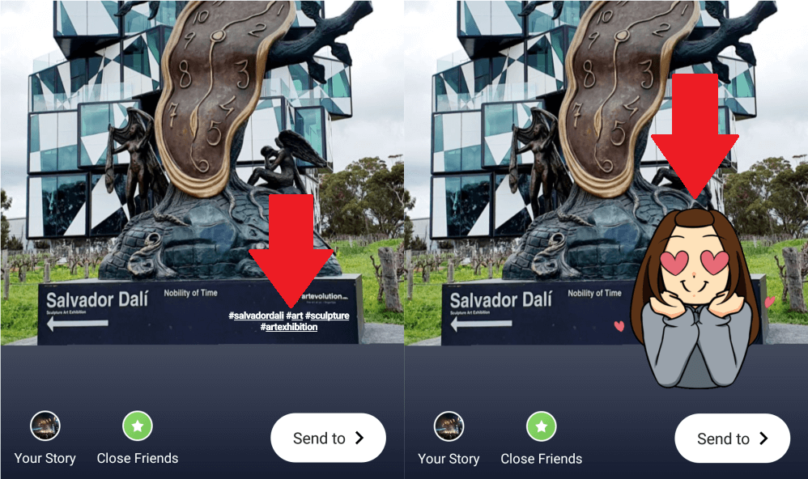
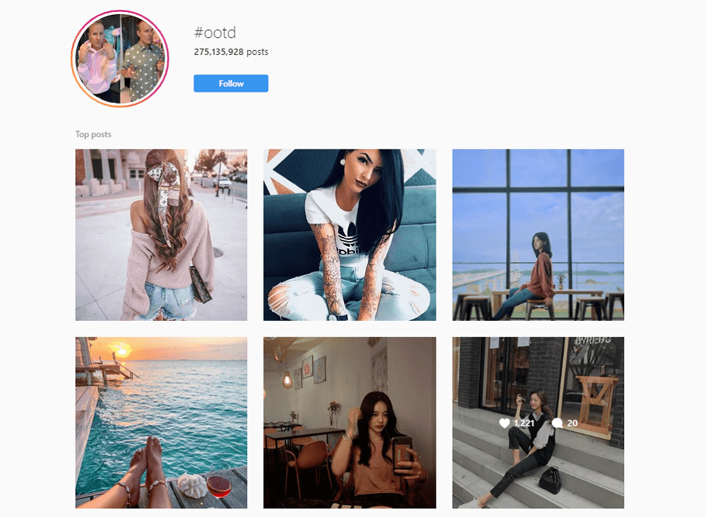
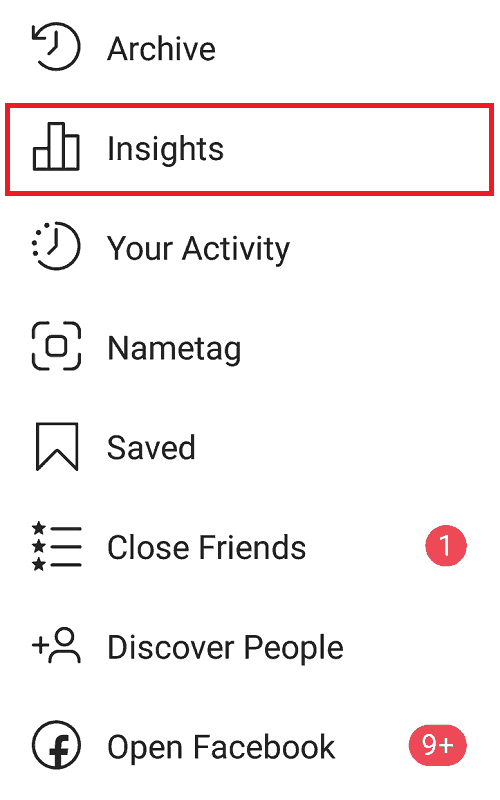
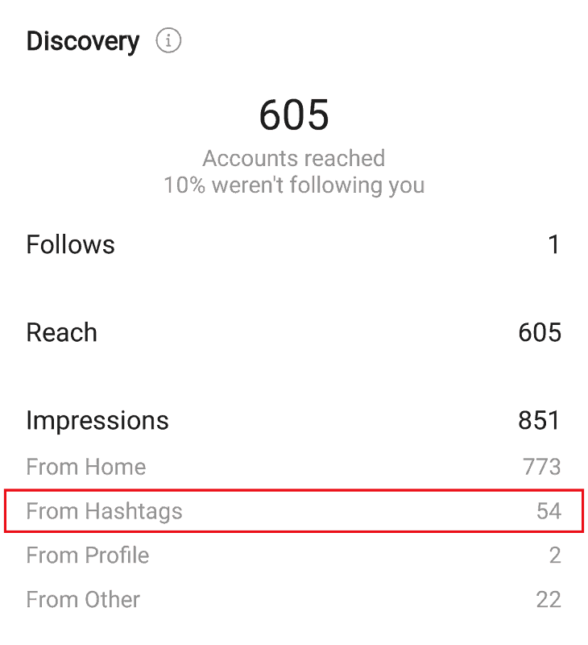
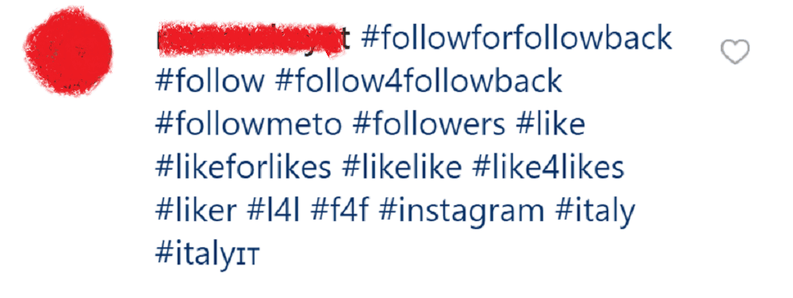

Instagram hashtags are a vital part of any user’s marketing strategy. As such, one must familiarize themselves with the limits, tactics, and varying practices involved with this feature of the platform. Below, we explore the effective use of hashtags (particularly optimizing the Instagram hashtag limit), and how one can successfully implement these for better reach and profile growth.
First Off, What Are Instagram Hashtags?
Instagram hashtags are used on posts to categorize them in to their appropriate niches. For example, a fitness influencer will likely tag their posts with terms such as “#gymjunkie”, “#healthyliving”, and “#bodybuilding”. Each hashtag has its own page on the app, displaying all posts that include it in the caption.
Anyone looking for fitness-related content will likely search these tags on the app, helping them discover the user’s posts.
Why Should We Use Instagram Hashtags?
Instagram hashtags can offer greater engagement, reach, and brand awareness when used effectively. Studies show that hashtags can increase engagement by up to 12.6%, with longer hashtags offering even greater results. This is because they aid in a user’s content search, sorting them into their respective niches to capture the appropriate audience interest.
Courtesy of _birb_memes_ (Instagram account).
Hashtags also help in promoting your brand and encouraging audience interactions. Plenty of business accounts create “branded hashtags” – establishing a hashtag feed specifically for their content. By encouraging followers to use these same hashtags, they’re not only boosting engagement with their brand, but also spurring user-generated promotion.
Users now have the ability to follow specific hashtags. This makes them all the more useful in raising your content visibility.
What is the Instagram Hashtag Limit?
Users can use Instagram hashtags for both standard posts and Stories. For standard post captions, Instagram allows a maximum of 30 hashtags. Stories have a much more restrictive limit of 10 hashtags per story.
Those who attempt to go beyond the Instagram hashtag limit will find their caption completely removed upon posting. (The photo/video will still post as normal, just with an empty description). When adding more than 10 hashtags to a story, it may not post altogether.
How to Hide Story or Caption Hashtags
As useful as they may be, users often find hashtags to clutter or ruin the overall aesthetic of a photo, video, or story.
To continue reaping the benefits of hashtags, while keeping your standard posts as “tidy”-looking as possible, many opt to separate their tags from their main caption with a series of dots.
Courtesy of jessicakisiel (Instagram account).
Simply type in a single dot or period, hitting “Enter” after each one. After repeating this about five times, you can then paste in your list of hashtags.
While stories have their own hashtag “stickers” to make them look a tad more attractive, you can still choose to hide them altogether. Type your tags in an ordinary text field, reducing them to the smallest possible text size. (You can continue minimizing their size by pinching at the text field after adding it in.)
Once you’ve added your hashtags to the story, just choose a sticker or GIF to cover them up. Adjust the size as needed to ensure your tags are covered up completely.

What’s the Ideal Number of Hashtags (for Most Engagement)?
There are varying studies on the “magic number” of hashtags for best engagement, though most tend to agree between the range of 9 to 11 hashtags.
Despite the generous limit of 30 hashtags per post, some advise users with the “less is more” rule when it comes to tagging posts. This means that it’s best to stick to a handful of well-researched, relevant hashtags that effectively get your content seen; rather than stuffing your caption with keywords and general phrases to max out your limit.

Courtesy of jordynrichardsmusic (Instagram account).
This will likely come off as “spammy” or desperate, damaging your post engagement as a result.
However, since there aren’t any hard and fast rules, it’s best to experiment with your hashtag strategy. Some may find that 30 hashtags do well for their reach (provided each are relevant to the posted content) – while others stick to 10 or less. Track your content performance to find out which works best for you.
How to Optimize the Instagram Hashtag Limit
Aside from knowing how many to use, there are other methods of optimizing your Instagram hashtags and gaining the best possible engagement for your content. These include:
Knowing What Hashtags to Use
It may sound simple enough, but for those new to the game, finding appropriate, top-performing hashtags for your content can get a bit puzzling.
As a general rule, hashtags should always be relevant to the content they’re used for. A good first step would be determining the hashtags used in your specific niche. These could be as generic as “#travel” or “#photography”; though there are plenty other lesser-known tags that use slang or phrases specific to the community.
An example of this would be “#ootd” or “#Instafashion” for accounts related to clothing and fashion styles. A few others are “#gamestagram” or “#gamingrig” for those dedicated to video games. These are specific to the industry, and may not be as obvious without a little research.

To find more effective hashtags for your content…
Find Out What Your Competitors Are Using
An easy way of discovering new, high-performing hashtags is to look at what your competitors are using. Those with trending, engaging content in your community likely have a successful hashtag strategy to match.

Courtesy of lost_world_treasures (Instagram account).
Look through their captions and make note of the niche-specific hashtags they often use. This a helpful way of discovering tags unique to your field, and where better to research than on already influential profiles?
This can also help you brainstorm alternative tags if you wish to steer clear of the high competition.
Use the Search Function
Another simple way of finding new hashtags is to use Instagram’s search field. When writing your caption, enter a keyword after the “#” symbol to generate a list of hashtag suggestions related to that topic.

This method is also useful for determining the post competition for each tag. Each suggestion will also display the number of users using the hashtag, helping you decide whether you’d want to compete for the same audience – or use a lower-traffic tag for better search odds.
Use Online Hashtag Tools
Instagrammers have it lucky these days; a plethora of online apps and tools are now available to manage your content and perform the necessary marketing research.
This includes hashtag tools – websites or apps that automatically track down the most effective tags to use in your niche. Such tools include Hashtagify, KeywordTool, and HashMe.
Courtesy of Hashtagify.
These conveniently generate a list of active hashtags under a specific topic, and all you have to do is copy and paste it into your captions. Some may even offer analytical tools to help you track hashtag performance. While some provide their services for free, others may require a small monthly fee – though it may just be a worthwhile investment.
Use a Mix of Low and High-Competition Hashtags
It helps to mix things up when using hashtags, applying both high and low-density tags to your post.
Using a hashtag with high-competition (these often use more generic terms such as “#adventure” or “#art”) can immediately sort your content in its appropriate category. With the right timing, you may just have a large number of users browsing through that tag, with many likely to stumble across your new post before getting lost in the noise.

Lower-density hashtags, on the other hand, make it easier for your content to “trend”. These tags have far less users competing for exposure, granting you visibility for longer period of time.
Being likely more niche-specific, lower-density tags can also help in more accurately targeting your desired audience. It may also be valuable in striking up new connections on the platform.
Track Your Hashtag Performance
Finally, be sure to track the effectiveness of your hashtags over time.
While online tools, as mentioned earlier, can help with this – users can also make use of Instagram’s native features.
To check the performance of your current hashtag strategy, visit your Instagram Insights.

This should pull up a feed of your most recent posts. Tap on one, and underneath the post, select “View Insights”.
A tab with a brief overview of your post insights should pop up. Drag this up to view it full-screen. In the “Discovery” section, you should be able to view the number of impressions you’ve received via your hashtags.

As you continue experimenting with various tags, keep track of this number to look for signs of progress or decline, and adjust your strategy as needed.
Bad Practices to Avoid
It’s important to be wary of seemingly clever hashtag methods that may actually do more harm than good. While they’ll offer that burst of short-term success, it’s best to keep clear of them altogether. Doing so will not only save your profile reputation, but will help you avoid getting potentially shadowbanned.
Adding More Hashtags as a Comment
Though the Instagram hashtag limit is 30 per standard post, users came up with the “hack” of adding 30 hashtags as a comment, then going back and adding 30 more in the caption.
Hashtags work whether placed in the actual post caption itself, or added through a comment. Maxing out the 30-tag limit in both areas seemed like a clever way around Instagram’s restrictions.
Courtesy of Instalionaire.
However, the platform has since caught onto this tactic in 2018. Now, when users attempt to add their extra 30 in the caption, the app will refuse to save your changes.
As mentioned earlier, the practice of stuffing posts with dozens of hashtags may provide that short-term engagement boost – but it can also appear as a spammy or desperate method. It’s better to optimize the set limit you’re given, rather than cramming in all the vaguely related keywords that come to mind.
Using Shadowbanned, Spammy or Irrelevant Tags
Along with the Instagram hashtag limit, there are also restrictions on the kinds of hashtags you can use.
When adding your hashtags, be sure they directly address you content. Users will often feel put off by irrelevant posts in their hashtag feeds – and may even flag your post as a result.
This can put you at risk of a shadowban, or signal the algorithm to show less of your content.
You can also get shadowbanned for using “banned” or broken tags – that is, hashtags that have violated community guidelines and are thus blocked from the platform. When searching up these tags, you’ll find that the app no longer displays any recent posts.
Using any of these banned tags will not only prevent your content from showing up on its feed, but from the rest of the hashtags you’ve added to the post. It therefore helps to do a bit of research on the app’s latest banned hashtags; either by manually searching them on Instagram, or looking for updated lists online.
Additionally, adding empty, generic hashtags like “#amazing” and “#instadaily” can come off more spammy than strategic. Such tags leave the impression of seeking that quick “boost” in reach, rather than connecting exclusively with those in your niche.

The same can be said for tags like “#like4like” and “#follow4follow” – sure, they encourage short-term interaction, but such engagement is likely artificial rather than genuine interest from your target audience.
Using the Same Tags Over and Over Again
Finally, it’s crucial to change up your hashtag groups from time to time, avoiding blatant repetition.
According to Instagram’s community guidelines, posting repetitive content will generally be frowned upon and seen as spam. This goes for hashtags just as well, and is part of Instagram’s initiative in fostering a community of genuine, meaningful interactions.
Experts therefore recommend having a saved set of 40-60 hashtags that you can easily rotate for each new post. This also allows you to experiment with the different tags and tracking the success for certain types.
By keeping your hashtags fresh with each upload, you can reach out to new and different audiences each time. Not only will you avoid shadowban treatment, but you’ll grow your profile visibility at a much quicker pace.
With the Right Methods, Hashtags Can Offer Strong, Long-Term Instagram Growth
As simple as they appear, nailing the right hashtag strategy can be a bit of a learning curve. By knowing how to optimize the Instagram hashtag limit, and finding those that work best for your specific niche – you’re sure to see that steady growth in views, reach, and content engagement over time.


2 Comments